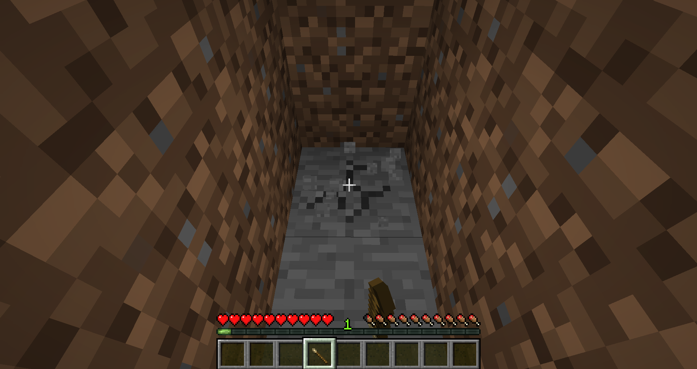
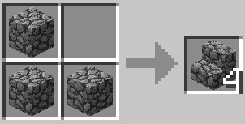

Back in the day, the frontiersman of BTW only had word-of-mouth lore, grit, determination, and a little file called "how to beat BTW.txt" to guide them through the game. This page that you are reading right now, how-to-beat-BTW.html, is the evolution of that concept!
Without spoiling the game, this page serves as a basic recipe guide for the various crafting recipes you will need to beat Better Than Wolves. The recipes are presented in a somewhat chronological list, with the most important survival recipes up front and the more complex recipes closer to the bottom.
The advice offered here is not exhaustive--it mainly serves to highlight the most important information you need to get started in Better Than Wolves. It concludes with crafting a windmill, pictured above. For a more robust guide with all the latest secrets, tips, and tricks, see the [REDACTED] page.
Table of Contents
(Not sure where to start? Use ctrl+f to search for specific items, or select one of the headings below)
First Recipes Blocks and Slabs Primitive Weapons Firemaking and Cooking Stone Tools Making an Oven Fishing Knitting and Basket Weaving Crafting Table.. stump? The Iron Age Growing Hemp Mechanical Power Diamonds!~ First Recipes ~
"IT'S MINECRAFT. PUNCH A TREE"
- Coder67... keep punching
You got a stick! (in BTW, they are called shafts)

Craft the stick into a pointy stick.
Do not bother trying to hit animals with it, the pointy stick isn't for hunting.

(but you can stick shafts into the ground if you want)
Use the pointy stick like a chisel and break a stone loose from some exposed rock.
If you can't find any exposed stone to mine, you may have to dig for it beneath the dirt.
Like punching a tree, chiseling a rock takes a long time. Be patient.

Craft your loose stone into a sharp stone.
IMPORTANT!
Don't mine any more loose stones with pointy sticks.
Sharp stones are a direct upgrade over pointy sticks! Use sharp rocks to get more rocks.
It is smart to gather 3 or 4 loose stones right away. Then, use the sharp stones on trees to gather at least 10 sticks.
After you have gathered enough sticks and stones, it is time to hunt.
~ Blocks and Slabs ~
When you break blocks with your hand, they fall apart.
Instead of full blocks, you get back piles.


Dirt piles can be crafted into loose dirt slabs.
Loose dirt slabs can be crafted into full loose dirt blocks.
Loose dirt blocks can be converted back into slabs and piles at your convenience.

Jumping uphill drains a lot of energy. Using slabs to build paths over hills preserves hunger!


Sand piles can be crafted into loose sand slabs. Loose sand slabs can be crafted into full loose sand blocks. Loose sand blocks can be converted back into slabs and piles at your convenience.


Gravel piles can be crafted into loose gravel slabs. Loose gravel slabs can be crafted into full loose gravel blocks. Loose gravel blocks can be converted back into slabs and piles at your convenience.


Loose stones can be crafted into loose cobblestone slabs. Loose cobblestone slabs can be crafted into full loose cobblestone blocks. Loose cobblestone blocks can be converted back into slabs and stones at your convenience.
Additionally, you can craft stairs out of cobblestone.
~ Primitive Weapons ~

The wooden club is good for whacking things.
The bone club is even better at whacking things, but you need bones from skeletons to make it...

Your fists are a decent weapon against animals. But if you try to punch a monster, you will probably die.
~ Firemaking and Cooking ~
You can cook food over the campfire.
The fire plow is the most basic fire starter. Hold right click against the campfire to light it.
It takes a LONG time to start a fire with the plow. More than half the durability will be used up before you get a spark, probably.

A bow drill is much faster, but you need string from a spider to make one...

The flint and steel can spark up a fire with just a few clicks!
Once you get a fire going, you need to make another pointy stick to use as a spit to roast food with.
Right click the campfire with the pointy stick to apply it. Then, right click the spit with some raw meat to start cooking.
Campfire Stage 1: low fire

The campfire begins at this stage. Add fuel by right-clicking with flammable material, or drop the fuel directly into the campfire.
Food will not cook at this stage.
Campfire Stage 2: medium fire
(perfect!)
Not too hot, not too cold. This is the ideal stage for cooking!
Campfire Stage 3: HUGE fire

This is the largest flame. If you cook over this stage too long, your meat will burn.
Items dropped into it will be incinerated immediately. The huge campfire emits the most light, so it is good for seeing deep into caves.
Dying Campfire: embers
The campfire can be rekindled by adding fuel to it. Otherwise, the embers will fade out and die.
Extinguished Campfire

The campfire is dead. It cannot be re-lit.
You can still store meat over it though!
Cured meat can save you in a pinch. Nitre is... creeper salt? Nobody is quite sure, but cured meat eliminates the risk of illness and is great for traveling.

Coal dust can be scraped from coal ore with a sharp rock.

Crude torches can be lit by right-clicking them against a fire source. Alternatively, you can light a torch with another torch.
Crude torches last about ten minutes, so don't waste them!
~ Stone Tools ~

(during the night, spiders will spit webs while hunting chickens)
If you cut cobwebs with a sharp stone, you can harvest string. String is the essential ingredient of stone tools.

The stone axe can be used to harvest logs from trees.

Wood logs can be chopped into sticks, sawdust, and bark.
You will have so much fuel from chopping that you could run two, even three, campfires at night and double your food production.
The stone shovel makes digging much faster.

Press ctrl + right click to place tools in their respective materials. Axes into woods, shovels into dirt, sand, and gravel.
~ Making an Oven ~
Camping is fun, but something more permanent would be better.
Clay can be found mixed with dirt in ponds, rivers, and swamps.

(you can dig up clay with your hands, but you will only recieve a pile)
Clay piles combine to make a single ball of clay.

Wet bricks can be molded from clay balls.

(hope it doesn't rain!)
Place wet bricks under the sun to dry them.

Brick slabs

Four brick slabs make an oven. 16 bricks per oven.

The top slot of the oven accepts food or ore.
The bottom slot of the oven accepts fuel. It can even take a whole log, which will burn for about 10 minutes and cook many pieces of food.

You can light the fuel on fire by right-clicking the bottom slot with a torch. It can also be ignited with a fire starter like a bow drill or plow.
~ THE IRON AGE ~
Scrape iron dust from exposed iron ore. Combine to make a chunk of iron ore.
Place a chunk in an oven and cook for 10 minutes to smelt an iron nugget.